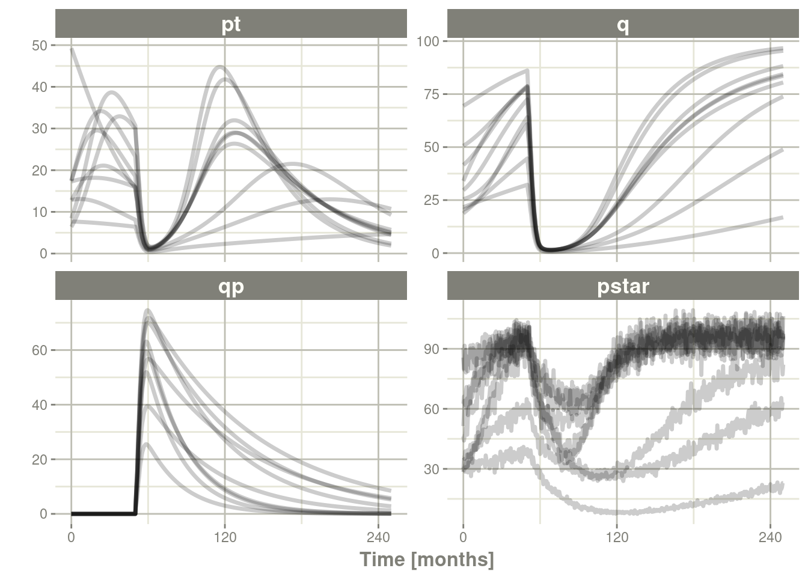
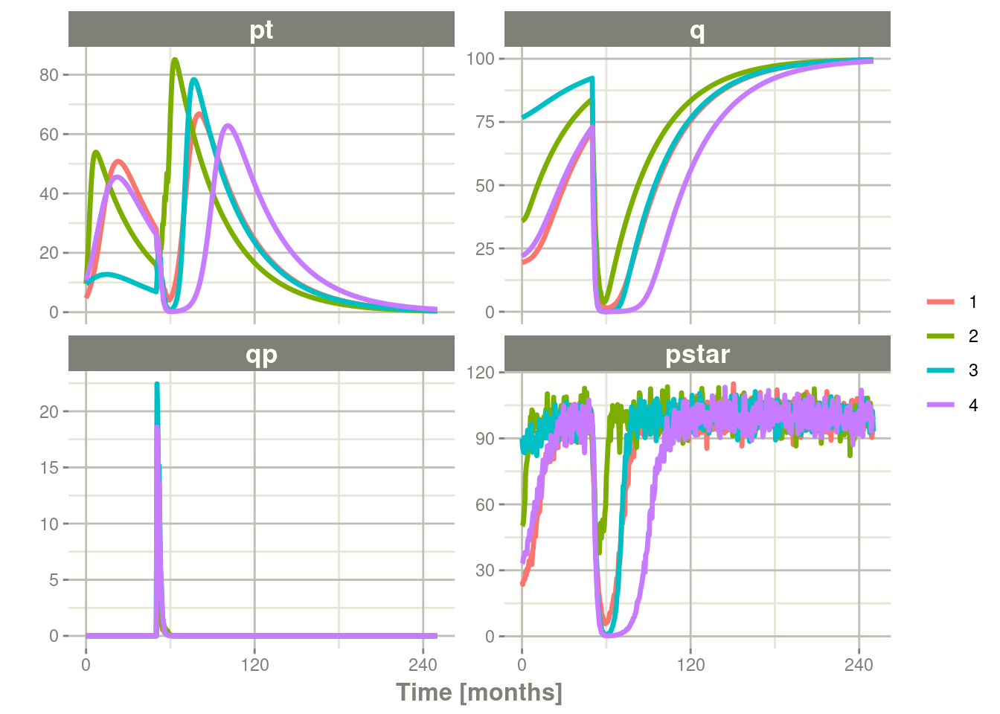
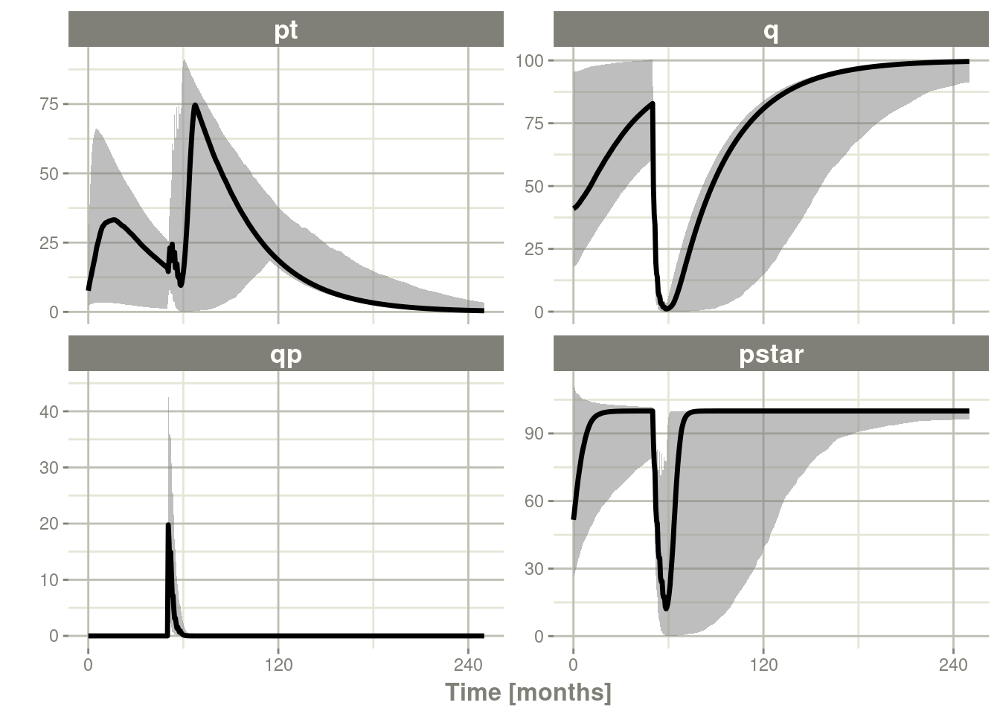

第十三章高级和其他主题
这包括高级或杂项主题在rxode2
13.1rxode2中的协变量
13.1.1个体的协变量
如果您希望求解个体的协变量，您可以通过iCov数据集指定它：
library(rxode2)
library(units)
library(xgxr)
mod3 <- rxode2({
KA=2.94E-01;
#### Clearance with individuals
CL=1.86E+01 * (WT / 70) ^ 0.75;
V2=4.02E+01;
Q=1.05E+01;
V3=2.97E+02;
Kin=1;
Kout=1;
EC50=200;
#### The linCmt() picks up the variables from above
C2 = linCmt();
Tz= 8
amp=0.1
eff(0) = 1 ## This specifies that the effect compartment starts at 1.
d/dt(eff) = Kin - Kout*(1-C2/(EC50+C2))*eff;
})
ev <- et(amount.units="mg", time.units="hours") %>%
et(amt=10000, cmt=1) %>%
et(0,48,length.out=100) %>%
et(id=1:4);
set.seed(10)
rxSetSeed(10)
#### Now use iCov to simulate a 4-id sample
r1 <- solve(mod3, ev,
### Create individual covariate data-frame
iCov=data.frame(id=1:4, WT=rnorm(4, 70, 10)))
print(r1)#> -- Solved rxode2 object --
#> -- Parameters ($params): --
#> KA V2 Q V3 Kin Kout EC50 Tz amp
#> 0.294 40.200 10.500 297.000 1.000 1.000 200.000 8.000 0.100
#> -- Initial Conditions ($inits): --
#> eff
#> 1
#> -- First part of data (object): --
#> # A tibble: 400 x 6
#> id time CL C2 eff WT
#> <int> [h] <dbl> <dbl> <dbl> <dbl>
#> 1 1 0 18.6 249. 1 70.2
#> 2 1 0.485 18.6 175. 1 70.2
#> 3 1 0.970 18.6 124. 1 70.2
#> 4 1 1.45 18.6 87.9 1 70.2
#> 5 1 1.94 18.6 62.7 1 70.2
#> 6 1 2.42 18.6 45.1 1 70.2
#> # ... with 394 more rowsplot(r1, C2, log="y")13.1.2随时间变化的协变量
协变量在rxode2中很容易指定，您可以将它们指定为变量。随时间变化的协变量，如昼夜节律模型中的时钟时间，也可以使用。扩展已讨论过的间接效应模型，我们有：
library(rxode2)
library(units)
mod3 <- rxode2({
KA=2.94E-01;
CL=1.86E+01;
V2=4.02E+01;
Q=1.05E+01;
V3=2.97E+02;
Kin0=1;
Kout=1;
EC50=200;
#### The linCmt() picks up the variables from above
C2 = linCmt();
Tz= 8
amp=0.1
eff(0) = 1 ## This specifies that the effect compartment starts at 1.
#### Kin changes based on time of day (like cortosol)
Kin = Kin0 +amp *cos(2*pi*(ctime-Tz)/24)
d/dt(eff) = Kin - Kout*(1-C2/(EC50+C2))*eff;
})
ev <- eventTable(amount.units="mg", time.units="hours") %>%
add.dosing(dose=10000, nbr.doses=1, dosing.to=1) %>%
add.sampling(seq(0,48,length.out=100));
#### Create data frame of 8 am dosing for the first dose This is done
#### with base R but it can be done with dplyr or data.table
ev$ctime <- (ev$time+set_units(8,hr)) %% 24现在事件数据集中存在一个协变量，系统可以通过结合数据集和模型来求解：
r1 <- solve(mod3, ev, covsInterpolation="linear")
print(r1)#> -- Solved rxode2 object --
#> -- Parameters ($params): --
#> KA CL V2 Q V3 Kin0 Kout
#> 0.294000 18.600000 40.200000 10.500000 297.000000 1.000000 1.000000
#> EC50 Tz amp pi
#> 200.000000 8.000000 0.100000 3.141593
#> -- Initial Conditions ($inits): --
#> eff
#> 1
#> -- First part of data (object): --
#> # A tibble: 100 x 5
#> time C2 Kin eff ctime
#> [h] <dbl> <dbl> <dbl> [h]
#> 1 0 249. 1.1 1 8
#> 2 0.485 175. 1.10 1.04 8.48
#> 3 0.970 124. 1.10 1.06 8.97
#> 4 1.45 88.0 1.09 1.07 9.45
#> 5 1.94 62.9 1.09 1.08 9.94
#> 6 2.42 45.2 1.08 1.08 10.4
#> # ... with 94 more rows在求解ODE方程时，对数据之外的时间进行采样。发生这种情况时，此 ODE 求解器可以在协变量值之间使用线性插值。它等价于 R的approxfun函数的method="linear"。【译者注：即这里的covsInterpolation参数项用于指定随时间变化的协变量，如何在观测的时间点进行填补】
plot(r1,C2, ylab="Central Concentration")
plot(r1,eff) + ylab("Effect") + xlab("Time")
请注意，在这种情况下，线性近似会导致求解系统在24小时内出现一些问题，其中协变量在24小时附近和0附近之间具有线性插值。虽然线性似乎是合理的，但时钟时间等情况使其他插值方法更具吸引力。
在rxode2中，默认协变量插值是最后一个观测结果向前结转（locf,Last Observation Carries Forward），或常数逼近。这是相当于R的approxfun与method="constant"。
r1 <- solve(mod3, ev,covsInterpolation="locf")
print(r1)
#> -- Solved rxode2 object --
#> -- Parameters ($params): --
#> KA CL V2 Q V3 Kin0 Kout
#> 0.294000 18.600000 40.200000 10.500000 297.000000 1.000000 1.000000
#> EC50 Tz amp pi
#> 200.000000 8.000000 0.100000 3.141593
#> -- Initial Conditions ($inits): --
#> eff
#> 1
#> -- First part of data (object): --
#> # A tibble: 100 x 5
#> time C2 Kin eff ctime
#> [h] <dbl> <dbl> <dbl> [h]
#> 1 0 249. 1.1 1 8
#> 2 0.485 175. 1.10 1.04 8.48
#> 3 0.970 124. 1.10 1.06 8.97
#> 4 1.45 88.0 1.09 1.08 9.45
#> 5 1.94 62.9 1.09 1.08 9.94
#> 6 2.42 45.2 1.08 1.08 10.4
#> # ... with 94 more rows给出了以下图表：
plot(r1,C2, ylab="Central Concentration", xlab="Time")
plot(r1,eff, ylab="Effect", xlab="Time")
在这种情况下，图中的曲线似乎更流畅。
您还可以使用NONMEM风格默认的的下一个观测结果向后结转（NOCB，next observation carried backward）的插值样式：
r1 <- solve(mod3, ev,covsInterpolation="nocb")
print(r1)
#> -- Solved rxode2 object --
#> -- Parameters ($params): --
#> KA CL V2 Q V3 Kin0 Kout
#> 0.294000 18.600000 40.200000 10.500000 297.000000 1.000000 1.000000
#> EC50 Tz amp pi
#> 200.000000 8.000000 0.100000 3.141593
#> -- Initial Conditions ($inits): --
#> eff
#> 1
#> -- First part of data (object): --
#> # A tibble: 100 x 5
#> time C2 Kin eff ctime
#> [h] <dbl> <dbl> <dbl> [h]
#> 1 0 249. 1.1 1 8
#> 2 0.485 175. 1.10 1.04 8.48
#> 3 0.970 124. 1.10 1.06 8.97
#> 4 1.45 88.0 1.09 1.07 9.45
#> 5 1.94 62.9 1.09 1.08 9.94
#> 6 2.42 45.2 1.08 1.08 10.4
#> # ... with 94 more rows给出了以下图表：
plot(r1,C2, ylab="Central Concentration", xlab="Time")plot(r1,eff, ylab="Effect", xlab="Time")
13.2Shiny与rxode2
13.2.1制作R Shiny应用的工具
创建一个示例 RShiny应用程序以交互方式探索各种复杂给药方案的反应的示例可在 http://qsp.engr.uga.edu:3838/rxode2/RegimenSimulator中找到。像这样的Shiny应用程序可以通过可以使用实验函数`genShinyApp.template()`以编程方式创建。
上述应用包括用于改变给药剂量、给药方案、剂量循环和循环次数的小部件。
genShinyApp.template(appDir = "shinyExample", verbose=TRUE)
library(shiny)
runApp("shinyExample")13.3将rxode2与管道一起使用
13.3.1为管道设置rxode2模型
在这个例子中，我们将展示如何在一个简单的管道中使用rxode2。
我们可以从一个模型开始，该模型可用于rxode2可以处理的不同模拟工作流：
library(rxode2)
Ribba2012 <- rxode2({
k = 100
tkde = 0.24
eta.tkde = 0
kde ~ tkde*exp(eta.tkde)
tkpq = 0.0295
eta.kpq = 0
kpq ~ tkpq * exp(eta.kpq)
tkqpp = 0.0031
eta.kqpp = 0
kqpp ~ tkqpp * exp(eta.kqpp)
tlambdap = 0.121
eta.lambdap = 0
lambdap ~ tlambdap*exp(eta.lambdap)
tgamma = 0.729
eta.gamma = 0
gamma ~ tgamma*exp(eta.gamma)
tdeltaqp = 0.00867
eta.deltaqp = 0
deltaqp ~ tdeltaqp*exp(eta.deltaqp)
prop.err <- 0
pstar <- (pt+q+qp)*(1+prop.err)
d/dt(c) = -kde * c
d/dt(pt) = lambdap * pt *(1-pstar/k) + kqpp*qp -
kpq*pt - gamma*c*kde*pt
d/dt(q) = kpq*pt -gamma*c*kde*q
d/dt(qp) = gamma*c*kde*q - kqpp*qp - deltaqp*qp
#### initial conditions
tpt0 = 7.13
eta.pt0 = 0
pt0 ~ tpt0*exp(eta.pt0)
tq0 = 41.2
eta.q0 = 0
q0 ~ tq0*exp(eta.q0)
pt(0) = pt0
q(0) = q0
})这是在Ribba 2012中描述的肿瘤生长模型。在这种情况下，我们将模型编译成R对象Ribba2012，尽管在rxode2模拟管道中，您不必将编译后的模型分配给任何对象，尽管我认为这是有意义的。
13.3.2模拟一个事件表
模拟单个事件表非常简单：
- 通过
et()可以将rxode2模拟对象通过管道传输到事件表对象。 - 当完全指定事件时，您只需使用
rxSolve()求解 ODE 系统即可。 - 在这种情况下，您可以将输出通过管道传输到
plot()以方便地查看结果。 pt（增殖组织），q（静止组织）qp（DNA损伤的静止组织）和pstar（肿瘤组织总数）
Ribba2012 %>% # Use rxode2
et(time.units="months") %>% # Pipe to a new event table
et(amt=1, time=50, until=58, ii=1.5) %>% # Add dosing every 1.5 months
et(0, 250, by=0.5) %>% # Add some sampling times (not required)
rxSolve() %>% # Solve the simulation
plot(pt, q, qp, pstar) # Plot it, plotting the variables of interest
13.3.3从单个事件表模拟多个个体
13.3.3.1模拟个体之间的变异
下一种可能有用的模拟是，模拟接受相同治疗的多个患者。在这种情况下，我们将使用文本规定 omega矩阵：
#### Add CVs from paper for individual simulation
#### Uses exact formula:
lognCv = function(x){log((x/100)^2+1)}
library(lotri)
#### Now create omega matrix
#### I'm using lotri to quickly specify names/diagonals
omega <- lotri(eta.pt0 ~ lognCv(94),
eta.q0 ~ lognCv(54),
eta.lambdap ~ lognCv(72),
eta.kqp ~ lognCv(76),
eta.qpp ~ lognCv(97),
eta.deltaqp ~ lognCv(115),
eta.kde ~ lognCv(70))
omega
#> eta.pt0 eta.q0 eta.lambdap eta.kqp eta.qpp eta.deltaqp
#> eta.pt0 0.6331848 0.0000000 0.0000000 0.0000000 0.0000000 0.0000000
#> eta.q0 0.0000000 0.2558818 0.0000000 0.0000000 0.0000000 0.0000000
#> eta.lambdap 0.0000000 0.0000000 0.4176571 0.0000000 0.0000000 0.0000000
#> eta.kqp 0.0000000 0.0000000 0.0000000 0.4559047 0.0000000 0.0000000
#> eta.qpp 0.0000000 0.0000000 0.0000000 0.0000000 0.6631518 0.0000000
#> eta.deltaqp 0.0000000 0.0000000 0.0000000 0.0000000 0.0000000 0.8426442
#> eta.kde 0.0000000 0.0000000 0.0000000 0.0000000 0.0000000 0.0000000
#> eta.kde
#> eta.pt0 0.0000000
#> eta.q0 0.0000000
#> eta.lambdap 0.0000000
#> eta.kqp 0.0000000
#> eta.qpp 0.0000000
#> eta.deltaqp 0.0000000
#> eta.kde 0.3987761有了这些信息，很容易从基于模型的参数中模拟3个主题：
set.seed(1089)
rxSetSeed(1089)
Ribba2012 %>% # Use rxode2
et(time.units="months") %>% # Pipe to a new event table
et(amt=1, time=50, until=58, ii=1.5) %>% # Add dosing every 1.5 months
et(0, 250, by=0.5) %>% # Add some sampling times (not required)
rxSolve(nSub=3, omega=omega) %>% # Solve the simulation
plot(pt, q, qp, pstar) # Plot it, plotting the variables of interest
请注意，此模拟中添加了两种不同的内容： -nSub指定模型中有多少个个体 -omega指定个体之间的变异。
13.3.3.2具有无法解释的变异【残差变异】的模拟
您甚至可以很容易地添加无法解释的变异【译者注：这里无法解释的变异是指残差变异】：
Ribba2012 %>% # Use rxode2
et(time.units="months") %>% # Pipe to a new event table
et(amt=1, time=50, until=58, ii=1.5) %>% # Add dosing every 1.5 months
et(0, 250, by=0.5) %>% # Add some sampling times (not required)
rxSolve(nSub=3, omega=omega, sigma=lotri(prop.err ~ 0.05^2)) %>% # Solve the simulation
plot(pt, q, qp, pstar) # Plot it, plotting the variables of interest在此示例中，我们仅通过添加sigma矩阵以在pstar或总的肿瘤组织上添加无法解释的变异【译者注：这里无法解释的变异是指残差变异】。
如果你愿意，你甚至可以模拟theta omega和sigma值的不确定性。
13.3.3.3所有参数的不确定性模拟（按矩阵）
如果我们假设这些参数来自95受试者，每个受试者有 8 个观测结果，那么 omega 矩阵的自由度将为95，sigma矩阵的自由度是 95*8=760，因为95项通知(informed)了omega矩阵，而760 项通知sigma矩阵。
Ribba2012 %>% # Use rxode2
et(time.units="months") %>% # Pipe to a new event table
et(amt=1, time=50, until=58, ii=1.5) %>% # Add dosing every 1.5 months
et(0, 250, by=0.5) %>% # Add some sampling times (not required)
rxSolve(nSub=3, nStud=3, omega=omega, sigma=lotri(prop.err ~ 0.05^2),
dfSub=760, dfObs=95) %>% # Solve the simulation
plot(pt, q, qp, pstar) # Plot it, plotting the variables of interest
通常在模拟中，我们有一个固定效应参数的完整协方差矩阵。在此示例中，我们没有此矩阵，但它可以通过thetaMat指定。
虽然我们没有完整的协方差矩阵，但我们可以从模型论文中获得有关协方差矩阵对角线元素的信息。这些可以转换如下：
rseVar <- function(est, rse){
return(est*rse/100)^2
}
thetaMat <- lotri(tpt0 ~ rseVar(7.13,25),
tq0 ~ rseVar(41.2,7),
tlambdap ~ rseVar(0.121, 16),
tkqpp ~ rseVar(0.0031, 35),
tdeltaqp ~ rseVar(0.00867, 21),
tgamma ~ rseVar(0.729, 37),
tkde ~ rseVar(0.24, 33)
);
thetaMat
#> tpt0 tq0 tlambdap tkqpp tdeltaqp tgamma tkde
#> tpt0 1.7825 0.000 0.00000 0.000000 0.0000000 0.00000 0.0000
#> tq0 0.0000 2.884 0.00000 0.000000 0.0000000 0.00000 0.0000
#> tlambdap 0.0000 0.000 0.01936 0.000000 0.0000000 0.00000 0.0000
#> tkqpp 0.0000 0.000 0.00000 0.001085 0.0000000 0.00000 0.0000
#> tdeltaqp 0.0000 0.000 0.00000 0.000000 0.0018207 0.00000 0.0000
#> tgamma 0.0000 0.000 0.00000 0.000000 0.0000000 0.26973 0.0000
#> tkde 0.0000 0.000 0.00000 0.000000 0.0000000 0.00000 0.0792现在我们有一个thetaMat来表示theta矩阵中的不确定性，以及模拟中的其他部分。您可以使用thetaMat 矩阵将这些信息放入您的模拟中。
由于theta的变异很大，很容易抽样出一个负速率常数，这是没有意义的。例如：
Ribba2012 %>% # Use rxode2
et(time.units="months") %>% # Pipe to a new event table
et(amt=1, time=50, until=58, ii=1.5) %>% # Add dosing every 1.5 months
et(0, 250, by=0.5) %>% # Add some sampling times (not required)
rxSolve(nSub=2, nStud=2, omega=omega, sigma=lotri(prop.err ~ 0.05^2),
thetaMat=thetaMat,
dfSub=760, dfObs=95) %>% # Solve the simulation
plot(pt, q, qp, pstar) # Plot it, plotting the variables of interest
#> unhandled error message: EE:[lsoda] 70000 steps taken before reaching tout
#> @(lsoda.c:750
#> Warning message:
#> In rxSolve_(object, .ctl, .nms, .xtra, params, events, inits, setupOnly = .setupOnly) :
#> Some ID(s) could not solve the ODEs correctly; These values are replaced with NA.要纠正这些问题，您只需使用截断的多元正态并指定合理的参数范围。对于theta，这由thetaLower和 thetaUpper指定。其他矩阵也有类似的参数： omegaLower，omegaUpper，sigmaLower和sigmaUpper。这些可以是命名向量、一个数值或与thetaMat矩阵中指定的参数数量匹配的数字向量。
在此此示例中，只需修改模拟即可使 thetaLower=0，以确保所有速率都是正数的：
Ribba2012 %>% # Use rxode2
et(time.units="months") %>% # Pipe to a new event table
et(amt=1, time=50, until=58, ii=1.5) %>% # Add dosing every 1.5 months
et(0, 250, by=0.5) %>% # Add some sampling times (not required)
rxSolve(nSub=2, nStud=2, omega=omega, sigma=lotri(prop.err ~ 0.05^2),
thetaMat=thetaMat,
thetaLower=0, # Make sure the rates are reasonable
dfSub=760, dfObs=95) %>% # Solve the simulation
plot(pt, q, qp, pstar) # Plot it, plotting the variables of interest
13.3.4总结模拟的输出
您不仅可以很容易的使用dplyr和data.table来执行自己的模拟的总结，也可以通过使用rxode2的 confint函数。
#### This takes a little more time; Most of the time is the summary
#### time.
sim0 <- Ribba2012 %>% # Use rxode2
et(time.units="months") %>% # Pipe to a new event table
et(amt=1, time=50, until=58, ii=1.5) %>% # Add dosing every 1.5 months
et(0, 250, by=0.5) %>% # Add some sampling times (not required)
rxSolve(nSub=10, nStud=10, omega=omega, sigma=lotri(prop.err ~ 0.05^2),
thetaMat=thetaMat,
thetaLower=0, # Make sure the rates are reasonable
dfSub=760, dfObs=95) %>% # Solve the simulation
confint(c("pt","q","qp","pstar"),level=0.90); # Create Simulation intervals
sim0 %>% plot() # Plot the simulation intervals13.3.4.1从参数的数据框进行模拟
虽然从矩阵模拟可能非常有用并且是模拟信息的一种快速方法，但有时您可能想要模拟更复杂的场景。例如，可能有一些理由认为tkde需要高于tlambdap，因此需要更仔细地进行模拟。您可以以任何您想要的方式生成数据框。给出了模拟新参数的内部方法。
library(dplyr)
pars <- rxInits(Ribba2012);
pars <- pars[regexpr("(prop|eta)",names(pars)) == -1]
print(pars)
#> k tkde tkpq tkqpp tlambdap tgamma tdeltaqp tpt0
#> 1.00e+02 2.40e-01 2.95e-02 3.10e-03 1.21e-01 7.29e-01 8.67e-03 7.13e+00
#> tq0
#> 4.12e+01
#### This is the exported method for simulation of Theta/Omega internally in rxode2
df <- rxSimThetaOmega(params=pars, omega=omega,dfSub=760,
thetaMat=thetaMat, thetaLower=0, nSub=60,nStud=60) %>%
filter(tkde > tlambdap) %>% as.tbl()
#### You could also simulate more and bind them together to a data frame.
print(df)
#> # A tibble: 2,220 x 16
#> k tkde tkpq tkqpp tlambdap tgamma tdeltaqp tpt0 tq0 eta.pt0 eta.q0
#> <dbl> <dbl> <dbl> <dbl> <dbl> <dbl> <dbl> <dbl> <dbl> <dbl> <dbl>
#> 1 100 0.341 0.0295 1.03 0.315 1.05 1.06 7.91 41.4 -0.0615 -0.170
#> 2 100 0.341 0.0295 1.03 0.315 1.05 1.06 7.91 41.4 1.22 0.300
#> 3 100 0.341 0.0295 1.03 0.315 1.05 1.06 7.91 41.4 0.487 0.850
#> 4 100 0.341 0.0295 1.03 0.315 1.05 1.06 7.91 41.4 -0.660 -0.298
#> 5 100 0.341 0.0295 1.03 0.315 1.05 1.06 7.91 41.4 0.608 0.135
#> 6 100 0.341 0.0295 1.03 0.315 1.05 1.06 7.91 41.4 -1.70 0.0789
#> 7 100 0.341 0.0295 1.03 0.315 1.05 1.06 7.91 41.4 -0.521 0.411
#> 8 100 0.341 0.0295 1.03 0.315 1.05 1.06 7.91 41.4 0.630 -0.526
#> 9 100 0.341 0.0295 1.03 0.315 1.05 1.06 7.91 41.4 -0.102 -0.617
#> 10 100 0.341 0.0295 1.03 0.315 1.05 1.06 7.91 41.4 0.0731 -0.0867
#> # ... with 2,210 more rows, and 5 more variables: eta.lambdap <dbl>,
#> # eta.kqp <dbl>, eta.qpp <dbl>, eta.deltaqp <dbl>, eta.kde <dbl>
#### Quick check to make sure that all the parameters are OK.
all(df$tkde>df$tlambdap)
#> [1] TRUE
sim1 <- Ribba2012 %>% # Use rxode2
et(time.units="months") %>% # Pipe to a new event table
et(amt=1, time=50, until=58, ii=1.5) %>% # Add dosing every 1.5 months
et(0, 250, by=0.5) %>% # Add some sampling times (not required)
rxSolve(df)
#### Note this information looses information about which ID is in a
#### "study", so it summarizes the confidence intervals by dividing the
#### subjects into sqrt(#subjects) subjects and then summarizes the
#### confidence intervals
sim2 <- sim1 %>% confint(c("pt","q","qp","pstar"),level=0.90); # Create Simulation intervals
save(sim2, file = file.path(system.file(package = "rxode2"), "pipeline-sim2.rds"), version = 2)
sim2 %>% plot()
13.4加速rxode2
13.4.1通过多个个体并行求解提高rxode2速度
rxode2最初是作为ODE解算器开发的，它允许对单个个体进行ODE解算。这种灵活性仍然受到支持。
来自rxode2教程的原始代码如下：
library(rxode2)
library(microbenchmark)
library(ggplot2)
mod1 <- rxode2({
C2 = centr/V2;
C3 = peri/V3;
d/dt(depot) = -KA*depot;
d/dt(centr) = KA*depot - CL*C2 - Q*C2 + Q*C3;
d/dt(peri) = Q*C2 - Q*C3;
d/dt(eff) = Kin - Kout*(1-C2/(EC50+C2))*eff;
eff(0) = 1
})
#### Create an event table
ev <- et() %>%
et(amt=10000, addl=9,ii=12) %>%
et(time=120, amt=20000, addl=4, ii=24) %>%
et(0:240) ## Add Sampling
nsub <- 100 # 100 sub-problems
sigma <- matrix(c(0.09,0.08,0.08,0.25),2,2) # IIV covariance matrix
mv <- rxRmvn(n=nsub, rep(0,2), sigma) # Sample from covariance matrix
CL <- 7*exp(mv[,1])
V2 <- 40*exp(mv[,2])
params.all <- cbind(KA=0.3, CL=CL, V2=V2, Q=10, V3=300,
Kin=0.2, Kout=0.2, EC50=8)13.4.1.1for循环
编写代码实现下述示例的最慢方法是使用 for loop循环。在这个例子中，我们将它包含在一个函数中以比较用时。
runFor <- function(){
res <- NULL
for (i in 1:nsub) {
params <- params.all[i,]
x <- mod1$solve(params, ev)
##Store results for effect compartment
res <- cbind(res, x[, "eff"])
}
return(res)
}13.4.1.2通过apply类函数运行
一般来说，对于R，apply类型的函数比 for循环执行得更好，所以教程也建议采用此种方式增强速度
runSapply <- function(){
res <- apply(params.all, 1, function(theta)
mod1$run(theta, ev)[, "eff"])
}13.4.1.3使用单线程求解运行
您还可以让rxode2使用单线程求解同时求解所有个体，而无需在R中收集结果。
这里的数据输出略有不同，但仍然提供相同的信息：
runSingleThread <- function(){
solve(mod1, params.all, ev, cores=1)[,c("sim.id", "time", "eff")]
}13.4.1.42使用线程求解运行
rxode2支持多线程求解，所以另一种选择是有2 线程（在求解器的选项中称为cores，可以在rxControl()或rxSolve()中看到有关选项） 。
run2Thread <- function(){
solve(mod1, params.all, ev, cores=2)[,c("sim.id", "time", "eff")]
}13.4.1.5比较所有方法的用时
现在是关键时刻，时机：
bench <- microbenchmark(runFor(), runSapply(), runSingleThread(),run2Thread())
print(bench)
#> Unit: milliseconds
#> expr min lq mean median uq
#> runFor() 1062.73099 1304.97351 1355.11433 1349.88837 1409.64603
#> runSapply() 1133.98743 1300.32975 1346.84780 1331.50023 1382.29895
#> runSingleThread() 53.90511 67.85757 86.31790 80.53222 105.34612
#> run2Thread() 33.69476 37.82068 48.49613 53.49341 55.43786
#> max neval
#> 1635.26890 100
#> 1681.23364 100
#> 118.88022 100
#> 77.92788 100
autoplot(bench)
很明显，性能会有跳跃式的提升是发生在使用solve方法并将所有参数提供给rxode2进行求解时，而不是发生在使用for或sapply循环遍历每个个体的方式求解的时候。 应用于求解的内核/线程的数量也在求解中起作用。
我们可以使用以下代码进一步探索线程数：
runThread <- function(n){
solve(mod1, params.all, ev, cores=n)[,c("sim.id", "time", "eff")]
}
bench <- eval(parse(text=sprintf("microbenchmark(%s)",
paste(paste0("runThread(", seq(1, 2 * rxCores()),")"),
collapse=","))))
print(bench)
#> Unit: milliseconds
#> expr min lq mean median uq max neval
#> runThread(1) 54.89976 71.36315 79.28627 82.80764 85.94690 95.65980 100
#> runThread(2) 35.10327 38.48158 42.47366 41.74052 45.67836 59.75624 100
#> runThread(3) 26.82482 30.17348 34.41744 33.63812 37.57002 61.36881 100
#> runThread(4) 23.07798 27.67149 31.32003 30.51574 33.99461 46.33631 100
#> runThread(5) 30.47240 38.82789 41.69443 41.54031 44.78454 50.49672 100
#> runThread(6) 29.35039 33.44060 37.02153 37.26839 39.14627 59.46520 100
#> runThread(7) 26.93386 29.83401 33.55118 33.39193 35.98574 49.71733 100
#> runThread(8) 25.42155 28.83314 32.05635 32.01850 34.66935 54.87643 100
autoplot(bench)
在速度与数量或内核之间可能存在一个合适的位置。系统类型（mac、linux、windows和/或处理器）、ODE求解的复杂性和个体的数量可能会影响这个任意数量的线程。4个线程是一个很好的数字，无需任何先验知识，因为现在大多数系统至少有4个线程（或2个处理器和4个线程）。
13.4.2一个现实生活中的例子
在实现某些并行求解之前，运行rxode2的最快的方法是使用lapply。这就是Rik Schoemaker创建nlmixr比较的数据集方式，但为更快完成的pkgdown网站自动构建的运行，它被简化了。
library(rxode2)
library(data.table)
#Define the rxode2 model
ode1 <- "
d/dt(abs) = -KA*abs;
d/dt(centr) = KA*abs-(CL/V)*centr;
C2=centr/V;
"
#Create the rxode2 simulation object
mod1 <- rxode2(model = ode1)
#Population parameter values on log-scale
paramsl <- c(CL = log(4),
V = log(70),
KA = log(1))
#make 10,000 subjects to sample from:
nsubg <- 300 # subjects per dose
doses <- c(10, 30, 60, 120)
nsub <- nsubg * length(doses)
#IIV of 30% for each parameter
omega <- diag(c(0.09, 0.09, 0.09))# IIV covariance matrix
sigma <- 0.2
#Sample from the multivariate normal
set.seed(98176247)
rxSetSeed(98176247)
library(MASS)
mv <-
mvrnorm(nsub, rep(0, dim(omega)[1]), omega) # Sample from covariance matrix
#Combine population parameters with IIV
params.all <-
data.table(
"ID" = seq(1:nsub),
"CL" = exp(paramsl['CL'] + mv[, 1]),
"V" = exp(paramsl['V'] + mv[, 2]),
"KA" = exp(paramsl['KA'] + mv[, 3])
)
#set the doses (looping through the 4 doses)
params.all[, AMT := rep(100 * doses,nsubg)]
Startlapply <- Sys.time()
#Run the simulations using lapply for speed
s = lapply(1:nsub, function(i) {
#selects the parameters associated with the subject to be simulated
params <- params.all[i]
#creates an eventTable with 7 doses every 24 hours
ev <- eventTable()
ev$add.dosing(
dose = params$AMT,
nbr.doses = 1,
dosing.to = 1,
rate = NULL,
start.time = 0
)
#generates 4 random samples in a 24 hour period
ev$add.sampling(c(0, sort(round(sample(runif(600, 0, 1440), 4) / 60, 2))))
#runs the rxode2 simulation
x <- as.data.table(mod1$run(params, ev))
#merges the parameters and ID number to the simulation output
x[, names(params) := params]
})
#runs the entire sequence of 100 subjects and binds the results to the object res
res = as.data.table(do.call("rbind", s))
Stoplapply <- Sys.time()
print(Stoplapply - Startlapply)
#> Time difference of 26.99468 secs通过应用一些新的并行求解概念，您可以简单地以更少的代码和更快的速度运行相同的模拟：
rx <- rxode2({
CL = log(4)
V = log(70)
KA = log(1)
CL = exp(CL + eta.CL)
V = exp(V + eta.V)
KA = exp(KA + eta.KA)
d/dt(abs) = -KA*abs;
d/dt(centr) = KA*abs-(CL/V)*centr;
C2=centr/V;
})
omega <- lotri(eta.CL ~ 0.09,
eta.V ~ 0.09,
eta.KA ~ 0.09)
doses <- c(10, 30, 60, 120)
startParallel <- Sys.time()
ev <- do.call("rbind",
lapply(seq_along(doses), function(i){
et() %>%
et(amt=doses[i]) %>% # Add single dose
et(0) %>% # Add 0 observation
#### Generate 4 samples in 24 hour period
et(lapply(1:4, function(...){c(0, 24)})) %>%
et(id=seq(1, nsubg) + (i - 1) * nsubg) %>%
#### Convert to data frame to skip sorting the data
#### When binding the data together
as.data.frame
}))
#### To better compare, use the same output, that is data.table
res <- rxSolve(rx, ev, omega=omega, returnType="data.table")
endParallel <- Sys.time()
print(endParallel - startParallel)
#> Time difference of 0.1851892 secs您可以看到这两种方法之间的惊人时间差；要记住的几件事：
rxode2使用线程安全的sitmothreefry例程来模拟eta值。因此，预计结果会有所不同（此外，随机抽样的顺序也不同，因此会有所不同）- 之前的模拟是在R 3.5中运行的，它具有不同的随机数生成器，因此当使用较慢的模拟时，此模拟中的结果将与实际的nlmixr比较不同。
- 这个速度比较使用了
data.table.rxode2在内部使用data.table（如果可用）尝试加快排序速度，因此这在安装了data.table的与未安装的之间会存在不同。通过使用forderForceBase(TRUE)可以强制rxode2在排序时使用order()。在这种情况下，两者之间几乎没有区别，尽管在其他示例中data.table的存在会导致速度提升（并且不太可能导致速度变慢）。
13.4.2.1想要通过更多的方法来运行多个体模拟
自教程发布以来的后续新版本有更多的方法来运行多个个体的模拟，包括使用et()（参见rxode2事件 如需更多信息）增加采样和给药时间的变异，能够同时提供omega和sigma 矩阵，以及通过添加thetaMat到R以模拟在omega，sigma和theta矩阵上的不确定性；见rxode2模拟插图。
13.5在您的包中集成rxode2模型
13.5.1在包中使用预编译模型
如果您计划开发一个R添加包，并希望将预编译的rxode2模型包含到您开发的R添加包中，这是可以很容易实现的。您只需用rxPkg()命令制作这个R添加包。
library(rxode2);
#### Now Create a model
idr <- rxode2({
C2 = centr/V2;
C3 = peri/V3;
d/dt(depot) =-KA*depot;
d/dt(centr) = KA*depot - CL*C2 - Q*C2 + Q*C3;
d/dt(peri) = Q*C2 - Q*C3;
d/dt(eff) = Kin - Kout*(1-C2/(EC50+C2))*eff;
})
#### You can specify as many models as you want to add
rxPkg(idr, package="myPackage"); ## Add the idr model to your package上述操作将会：
- 将模型添加到您的R添加包中；一旦R添加包加载完成，您可以通过
idr命令使用R添加包的数据 - 将正确的R添加包的需求添加到DESCRIPTION文件中。您需要更新此DESCRIPTION文件以描述包并修改作者、许可证等。
- 创建可以添加到R添加包文档中的骨架模型文档文件。在本例中，它将是
R目录中的idr-doc.R文件 - 创建一个
configure和configure.win脚本，该脚本根据编译该脚本所依据的rxode2版本删除并重新生成src目录。如果您计划拥有自己编译的代码，应该对其进行修改，尽管我们并不建议这样做。 - 您可以在与rxode2对象交互的包中编写自己的R代码，以便您可以在包上下文中分发Shiny的应用程序和类似的东西。
一旦出现这种情况，您可以通过使用rxUse()将更多模型添加到您的R添加包中 。只需在您的R添加包中编译rxode2模型，然后用rxUse()添加该模型
rxUse(model)现在model和idr模型库中了。这还将在您的R添加包目录中创建Model-doc.R，以便您可以记录该模型。
然后，您可以使用devtools方法来安装/测试您的模型
devtools::load_all() # Load all the functions in the package
devtools::document() # Create package documentation
devtools::install() # Install package
devtools::check() # Check the package
devtools::build() # build the package so you can submit it to places like CRAN13.5.2在现有R添加包中使用模型
为了说明，让我们从一个空白的R添加包开始
library(rxode2)
library(usethis)
pkgPath <- file.path(rxTempDir(),"MyRxModel")
create_package(pkgPath);
use_gpl3_license("Matt")
use_package("rxode2", "LinkingTo")
use_package("rxode2", "Depends") ## library(rxode2) on load; Can use imports instead.
use_roxygen_md()
##use_readme_md()
library(rxode2);
#### Now Create a model
idr <- rxode2({
C2 = centr/V2;
C3 = peri/V3;
d/dt(depot) =-KA*depot;
d/dt(centr) = KA*depot - CL*C2 - Q*C2 + Q*C3;
d/dt(peri) = Q*C2 - Q*C3;
d/dt(eff) = Kin - Kout*(1-C2/(EC50+C2))*eff;
});
rxUse(idr); ## Add the idr model to your package
rxUse(); # Update the compiled rxode2 sources for all of your packages该rxUse()将： -创建rxode2源代码并将它们移动到包的src/ 目录。如果R添加包中只有R源代码，它还会用library-init.c结束目录，library-init.c中注册了R添加包中所有的rxode2模型，以便在R中使用。 -为您的R添加包中包含的每个模型创stub R文档。当您加载您的程序包时，您将能够通过标准的?接口R文档。
您仍然需要： -导出至少一个函数。如果您没有希望导出的函数，可以使用roxygen添加rxode2的再导出，示例如下：
##' @importFrom rxode2 rxode2
##' @export
rxode2::rxode2如果您想在R添加包中使用Suggests而不是Depends， 您可能需要导出所有rxode2的标准例程【译者注：“routines”此处被翻译为”例程”，您可以将其理解为rxode2程序包的子程序】
##' @importFrom rxode2 rxode2
##' @export
rxode2::rxode2
##' @importFrom rxode2 et
##' @export
rxode2::et
##' @importFrom rxode2 etRep
##' @export
rxode2::etRep
##' @importFrom rxode2 etSeq
##' @export
rxode2::etSeq
##' @importFrom rxode2 as.et
##' @export
rxode2::as.et
##' @importFrom rxode2 eventTable
##' @export
rxode2::eventTable
##' @importFrom rxode2 add.dosing
##' @export
rxode2::add.dosing
##' @importFrom rxode2 add.sampling
##' @export
rxode2::add.sampling
##' @importFrom rxode2 rxSolve
##' @export
rxode2::rxSolve
##' @importFrom rxode2 rxControl
##' @export
rxode2::rxControl
##' @importFrom rxode2 rxClean
##' @export
rxode2::rxClean
##' @importFrom rxode2 rxUse
##' @export
rxode2::rxUse
##' @importFrom rxode2 rxShiny
##' @export
rxode2::rxShiny
##' @importFrom rxode2 genShinyApp.template
##' @export
rxode2::genShinyApp.template
##' @importFrom rxode2 cvPost
##' @export
rxode2::cvPost
### This is actually from `magrittr` but allows less imports
##' @importFrom rxode2 %>%
##' @export
rxode2::`%>%`- 您还需要指示R加载包含在模型dll中的模型库模型。这通过以下方式实现：
### In this case `rxModels` is the package name
##' @useDynLib rxModels, .registration=TRUE如果这是一个带有rxode2模型的R添加包，并且您不打算添加任何其他编译源（推荐），您可以添加以下配置脚本
#!/bin/sh
### This should be used for both configure and configure.win
echo "unlink('src', recursive=TRUE);rxode2::rxUse()" > build.R
${R_HOME}/bin/Rscript build.R
rm build.R根据check，您可能需要一个虚拟的autoconf脚本，
#### dummy autoconf script
#### It is saved to configure.ac如果您想要与基于Rcpp或 C/Fortan的包中的其他源代码集成，则您需要包含rxModels-compiled.h和： -将定义宏compiledModelCall添加到注册列表中 .Call函数列表中。 -注册C接口以允许通过R_init0_rxModels_rxode2_models()进行模型求解（同样rxModels将被您换为您的R添加包的名称）。
完成后，您可以通过标准方法进行R添加包的编译/R添加包的文档生成：
devtools::load_all()
devtools::document()
devtools::install()如果您的R添加包在加载时使用了新版本的rxode2，则模型将在使用时重新编译。
但是，如果您希望为最新版本的 rxode2 重新编译模型，您只需在项目目录中再次调用rxUse()即可，然后使用安装/创建R添加包的标准方法。
devtools::load_all()
devtools::document()
devtools::install()请注意，您不必包含生成模型所需的rxode2代码，即可在 src 目录中重新生成rxode2的C代码。与所有rxode2对象一样，summary将显示重新创建相同模型的一种方法。【译者注：这一段度的不太明白，有待实际操作后对这段的翻译进行修订】
一个已编译模型的R添加包的示例可以在 RXModels存储库中找到。
13.6具有雅可比规范的刚性ODE
13.6.0.1具有雅可比规范的刚性ODE
【译者注：如果你不感兴趣rxode2的具体实现原理，仅专注于基于rxode2的应用，您可以略过此章节。】
偶尔，您可能会遇到一个刚性微分方程(stiff differential equation)，这是一个在数值上不稳定的微分方程，参数的微小变化会导致ODEs的不同解。解决这个问题一种的方法是选择刚性求解器或混合刚性求解器 （就像默认的LSODA）。通常这就足够了。然而”精确的雅可比解(exact Jacobian solutions)“可能会增加ODE的稳定性。（注意，”雅可比矩阵(Jacobian)“是ODE规范关对每个变量的导数【译者注：你可以将其简单了理解为是导数矩阵】）。在rxode2中，您可以使用 df(状态)/dy(变量)=语句【译者注：即您可以使用此语句描述一个微分方程(导数方程)，并且允许您方程的等号左侧中的”谁(状态，比如中央室的药量)“相对于”谁(变量，比如时间，比如浓度等)“的导数，等于，”什么(即微分方程的右侧，您可以自编写方程的右侧的语句/公式)“】。在各种条件下具有刚性性质的经典常微分方程是范德波尔(Van der Pol)微分方程。
在rxode2中，这些可以通过以下方式指定：
library(rxode2)
Vtpol2 <- rxode2({
d/dt(y) = dy
d/dt(dy) = mu*(1-y^2)*dy - y
##### Jacobian
df(y)/dy(dy) = 1
df(dy)/dy(y) = -2*dy*mu*y - 1
df(dy)/dy(dy) = mu*(1-y^2)
##### Initial conditions
y(0) = 2
dy(0) = 0
##### mu
mu = 1 ## nonstiff; 10 moderately stiff; 1000 stiff
})
et <- eventTable();
et$add.sampling(seq(0, 10, length.out=200));
et$add.dosing(20, start.time=0);
s1 <- Vtpol2 %>% solve(et, method="lsoda")
print(s1)
#> -- Solved rxode2 object --
#> -- Parameters ($params): --
#> mu
#> 1
#> -- Initial Conditions ($inits): --
#> y dy
#> 2 0
#> -- First part of data (object): --
#> # A tibble: 200 x 3
#> time y dy
#> <dbl> <dbl> <dbl>
#> 1 0 22 0
#> 2 0.0503 22.0 -0.0456
#> 3 0.101 22.0 -0.0456
#> 4 0.151 22.0 -0.0456
#> 5 0.201 22.0 -0.0456
#> 6 0.251 22.0 -0.0456
#> # ... with 194 more rows虽然在mu=1时并不刚性，但mu=1000是一个刚性的系统
s2 <- Vtpol2 %>% solve(c(mu=1000), et)
print(s2)
#> -- Solved rxode2 object --
#> -- Parameters ($params): --
#> mu
#> 1000
#> -- Initial Conditions ($inits): --
#> y dy
#> 2 0
#> -- First part of data (object): --
#> # A tibble: 200 x 3
#> time y dy
#> <dbl> <dbl> <dbl>
#> 1 0 22 0
#> 2 0.0503 22.0 -0.0000455
#> 3 0.101 22.0 -0.0000455
#> 4 0.151 22.0 -0.0000455
#> 5 0.201 22.0 -0.0000455
#> 6 0.251 22.0 -0.0000455
#> # ... with 194 more rows虽然这很容易做到，但有点乏味。如果你有适当的rxode2设置，你可以使用计算机代数系统符号来自动计算雅可比矩阵。
这是通过rxode2的calcJac选项完成的：
Vtpol <- rxode2({
d/dt(y) = dy
d/dt(dy) = mu*(1-y^2)*dy - y
##### Initial conditions
y(0) = 2
dy(0) = 0
##### mu
mu = 1 ## nonstiff; 10 moderately stiff; 1000 stiff
}, calcJac=TRUE)要查看生成的模型，可以使用rxCat()：
> rxCat(Vtpol)
d/dt(y)=dy;
d/dt(dy)=mu*(1-y^2)*dy-y;
y(0)=2;
dy(0)=0;
mu=1;
df(y)/dy(y)=0;
df(dy)/dy(y)=-2*dy*mu*y-1;
df(y)/dy(dy)=1;
df(dy)/dy(dy)=mu*(-Rx_pow_di(y,2)+1);